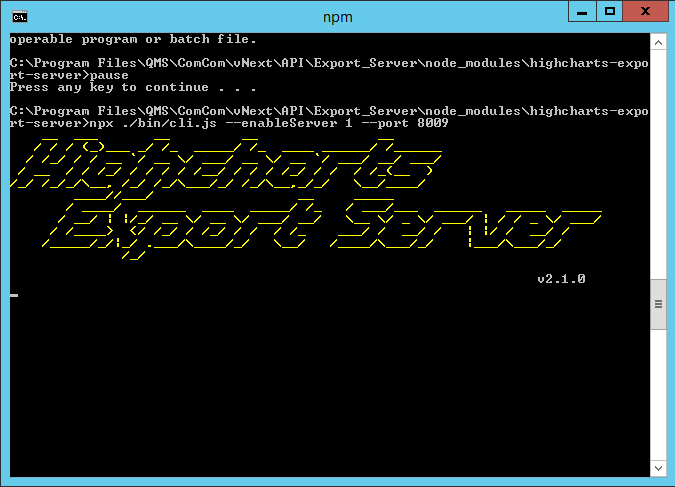
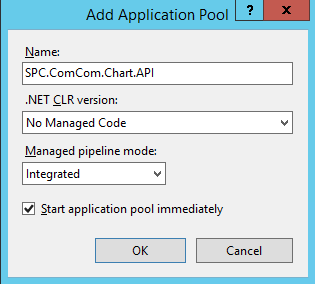
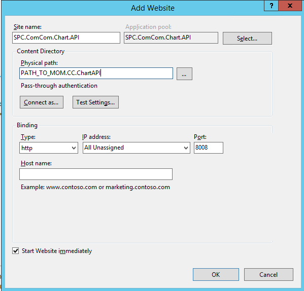

Export Chart as Image
Exporting chart is achieved through the highcharts-export-server, The purpose of this server is to Convert Highcharts.JS charts to static image files.
Pre-requirement
The highchart Export Server will be run as a NodeJs server therefor NodeJs must be installed on the system The server is already provided in the installation package under ../API/Export_Server.
Run and Install Export Server
- Move The Folder to the hosting server
- Navigate to Export_Server\highcharts-export-server
- Run Batch File StartExportServer which will run the server on port 8009
if you have trouble starting the server, open command line as administrator navigate to Export server path and run npm link, alternatively you can also install the export server as a global NodeJS Module using
npm install highcharts-export-server -g
you need to add the following Environment variables as well (only in case of npm-link or installing it globally)
| Variable Name | Variable Value |
|---|---|
| HIGHCHARTS_USE_GANTT | NO |
| HIGHCHARTS_USE_MAPS | NO |
| HIGHCHARTS_VERSION | 8.2.2 |
| ACCEPT_HIGHCHARTS_LICENSE | YES |
The Export server is now ready for serving export requests, to run the server with different port/parameter please consult highcharts-export-server Documentation

Deploy and Run the Chart API
Chart API is responsible for receiving chart settings like chart title, width & Hight and convert these settings alongside with data to Highchart syntax which will be sent automatically the Export Server
-
Create a new IIS Application pool
-
Create a New IIS Website for MOM.CC.Quality.Chart.API
-

-

Configure APIs Url
- In the Chart API open appsettings.JSON and configure the urls for
- Calculation: "URL_OF_STATISTICS_API",
- ApiGateway: "URL_OF_API_GATEWAY",
- Charting: "URL_OF_CHART_API",
- ExportServer:"URL_OF_EXPORT_SERVER",
- Do this also for API Gateway and Calculation API
- If you are not using API Gateway architecture you can just deploy the Statistic API and Chart API then configure the urls for them. Export a Control Chart using the same end point either from Gateway or from Statistics API all you need to do is to extend the request JSON by adding the following: Snippet
"ChartExportSettings":
{
"ChartTitle":"ExportedChart",
"ChartWidth":800,
"ChartHight":600,
"ChartType":"ControlChart"
}
Please consult swagger Model documentation for more Info.
Important Notes
- If the ChartType is not provided the Export server will ignore the export process and will only return the response from the calculation engine.
- If the ChartType set to ControlChart then the response will also contain a Base64 image of the ControlChart, more Chart types would be supported in the future. The export server must be always running in order for an Image to be exported